{kind=link}
suppressPackageStartupMessages({
library(CHOIR)
library(countsplit)
library(ggnewscale)
library(ragg)
library(scRNAseq)
library(Seurat)
library(tictoc)
})tl;dr
This week I learned about CHOIR from the Corces group at the Gladstone Institutes that aims to prevent overclustring single-cell data. CHOIR first subdivides a dataset into a hierarchical set of so many subclusters that overclustering is highly likely. It then trains ensembls of random forest classifiers to separate sibling clusters from each other based on gene expression, and merges those that cannot be reliably distinguished. CHOIR also includes optional harmonization (via Harmony and can reduce the risk of double dipping through count splitting. Here, I am learning how to run CHOIR using two public datasets.
Overview
In April, Cathrin Sant, Lennar Mucke and M. Ryan Corces published their paper CHOIR improves significance-based detection of cell types and states from single-cell data in Nature Genetics (and their preprint is freely avaiable here ).
They address a well-known challenge in single-cell analyses: many published analyses use clustering, an exploratory technique, to define subsets of cells that (might) correspond to cell types or cell states. Yet, as Susan Holmes and Wolfgang Huber point out1
[…] clustering methods will always deliver groups, even if there are none. If, in fact, there are no real clusters in the data, a hierarchical clustering tree may show relatively short inner branches; but it is difficult to quantify this. In general it is important to validate your choice of clusters with more objective criteria.
In practice, single-cell clusters are usually defined an iterative way, with manual interventions to split or combine subgroups based e.g. on the expression of marker genes and other prior knowledge2. This involves numerous choices, e.g. the choice of variable features to consider, which dimensionality reduction method to employ, how to create nearest neighbor graphs, the clustering method3 and its parameters, e.g. the resolution that determines the granularity of the final results.
The commonly used approaches 4 readily subdivide homogeneous datasets (e.g. without any actual subgroups) into clusters and invite speculation as to their biological meaning.
Sant and co-workers developed CHOIR, a principled approach to reduce the risk of both over- and underclustering single-cell data, illustrated in Figure 1 of their preprint (shown below).
The main steps of the algorithm are:
- Starting with the full dataset,
CHOIRperforms multiple rounds of iterative clustering - each with higher resolution - to separate the cells into a hierarchical tree of many possible clusters.
CHOIRkeeps track of the parent-child relationships between clusters, e.g. how each parent cluster is split into two or more child clusters through subsequent clustering steps.- This step is designed to produce overclustering, e.g. the proposed clusters are smaller than they should be.
- Clustering results depend on the choices made during data preprocessing, e.g. the selection of variable genes and dimensionality reduction. Initially, the most variable genes might be markers of coarse cell types; but as the number of clusters increases, the same genes might not distinguish finer distinctions (e.g. cell states) within them.
CHOIRtherefore repeats the feature-selection and dimensionality reduction within each of the initial clusters, and uses these updated values for sub-clustering.
- Next, this overclustered hierarchical clustering tree is pruned, starting with the leaves of the tree (e.g. the smallest clusters).
- For each pair of sibling clusters (say
AandB),CHOIRattempts to trains a random forest (RF) classifier5 on a balanced (e.g. downsampled) set of cells from each cluster, with the goal of assigning cells to the correct source (e.g. clusterAorB). Because the cluster assignments are known, the accuracy of the predictions can be determined. - If classifier fails to achieve an accuracy of at least 0.5, the clusters are considered too similar and are merged.
- If the accuracy exceeds 0.5, a null distribution is created: the cluster labels are randomized and a second classifier is trained for comparison. The whole process is repeated 100 times to estimate how much better the former classifier (performed on the actual assignments) performs compared to the latter (trained on randomized data).
If the RF classifier significantly (p < 0.05 after Bonferroni correction) outperforms the randomized baseline, there is sufficient evidence to keep the two clusters separate. If not, then the two candidate clusters are merged instead.
Additional features
CHOIR’s full implementation also includes harmonization of cells obtained in different batches using Harmony, allows users to specify batch covariates (and limit tests to within-batch comparisons) or to employ count splitting to avoid double-dipping.
For each pairwise comparison of candidate clusters, CHOIR records the accuracy of the trained classifiers, providing a metric of relatedness between them. It also retains information about feature (gene) importances, which might pinpoint useful marker genes.
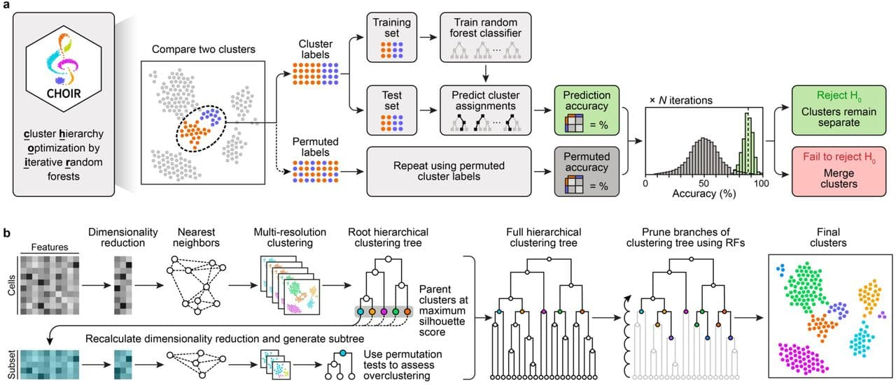
In their paper, the authors systematically compareCHOIR’s performance to that of other approaches using e.g.
- Simulated data
- Published single-cell RNA-seq data from a mixture of (many) immortalized cell lines
- Multi-modal (e.g. single-cell RNA-seq accompanied by matching CITE-seq or sci-Space) data6.
Running CHOIR
La Manno et al: 243 dopaminergic neurons
The CHOIR R package7 implements the algorithm and is accompanied by a very nice vignette to get users started.
Let’s step through the vignette, using the LaMannoBrainData scRNA-seq dataset that is available via the scRNAseq Bioconductor package.
The package offers two different ways of running the algorithm, starting with either a Seurat, SingleCellExperiment, or ArchR object containing normalized counts.
Using either the
CHOIRfunction to perform both steps of the analysis, or thebuildTreeandpruneTreefunctions for more control over each step.
The LaMannoBrainData function retrieves raw scRNA-seq data published by La Manno et al; here, we use a subset of the data collected from mouse adult dopaminergic neurons. We store the raw count matrix in a Seurat object, and perform basic quality filtering & normalization (using the default LogNormalize method).
data_matrix <- LaMannoBrainData('mouse-adult')@assays@data$counts
colnames(data_matrix) <- seq(1:ncol(data_matrix))
object <- data_matrix |>
CreateSeuratObject(
min.features = 100,
min.cells = 5) |>
NormalizeData()
objectAn object of class Seurat
12464 features across 243 samples within 1 assay
Active assay: RNA (12464 features, 0 variable features)
2 layers present: counts, dataIn this example, I will parallelize the analysis across two (local) CPUs.
- 1
-
The
CHOIRfunction relies on the future package to distribute worksloads across multiple cores. By default,futureonly allows global variables of < 500 MB to be passed to different workers. Here, I am increasing that limit to 2 GB to successfully runCHOIR. - 2
- I parallelize the execution across 4s (local) CPUs.
First, let’s use the CHOIR wrapper function with default arguments.
object <- CHOIR(object, n_cores = n_cores)Alternatively, we could perform the exact same calculations in a step wise fashion:
object <- object |>
buildTree(n_cores = n_cores) |>
pruneTree(n_cores = n_cores)
objectThe metadata slot of the Seurat object contains the CHOIR_clusters_0.05 column, specifying the final cluster each cell was assigned to (at the default significance threshold alpha = 0.05).
head(object@meta.data) orig.ident nCount_RNA nFeature_RNA CHOIR_clusters_0.05
1 SeuratProject 7826 3314 1
2 SeuratProject 3294 1895 2
3 SeuratProject 6776 3002 1
4 SeuratProject 7294 3192 2
5 SeuratProject 3747 1993 2
6 SeuratProject 11258 4363 2In addition, the output object has one additional dimensionality reduction: CHOIR_P0_reduction, containing the principal components calculated on variable features for the full dataset (P0).
Additional outputs can be found in the misc slot of the object, inside the CHOIR nested list:
names(object@misc$CHOIR)[1] "reduction" "var_features" "cell_IDs" "graph" "clusters"
[6] "records" "parameters" For example, we can access the dimensionality reduction results for each of the sub-clustering iterations (including the first one, P0, which is also stored in the object@reductions$CHOIR_P0_reduction slot, see above).
names(object@misc$CHOIR$reduction)[1] "P0_reduction" "P1_reduction" "P2_reduction" "P3_reduction"and the variable features they are each based on:
names(object@misc$CHOIR$var_features)[1] "P0_var_features" "P1_var_features" "P2_var_features" "P3_var_features"For convenience, the CHOIR package also includes functions to run UMAP to embed the principal components into a two dimensional space. For example, we can perform UMAP on the first (P0) principal components:
object <- runCHOIRumap(object, reduction = "P0_reduction")
names(object@misc$CHOIR$reduction)[1] "P0_reduction" "P1_reduction" "P2_reduction"
[4] "P3_reduction" "P0_reduction_UMAP"The UMAP coordinates have been added to the misc slot of the object:
names(object@misc$CHOIR$reduction)[1] "P0_reduction" "P1_reduction" "P2_reduction"
[4] "P3_reduction" "P0_reduction_UMAP"The CHOIR package also includes helper functions to plot the results of the sub-clustering analysis, e.g. the UMAP we generated above.
1plotCHOIR(object, key = "CHOIR", reduction = "P0_reduction_UMAP")- 1
-
The
plotCHOIRfunction is aware that the dimensionality reduction results are found in themiscslot, under the providedkey(default:CHOIR).
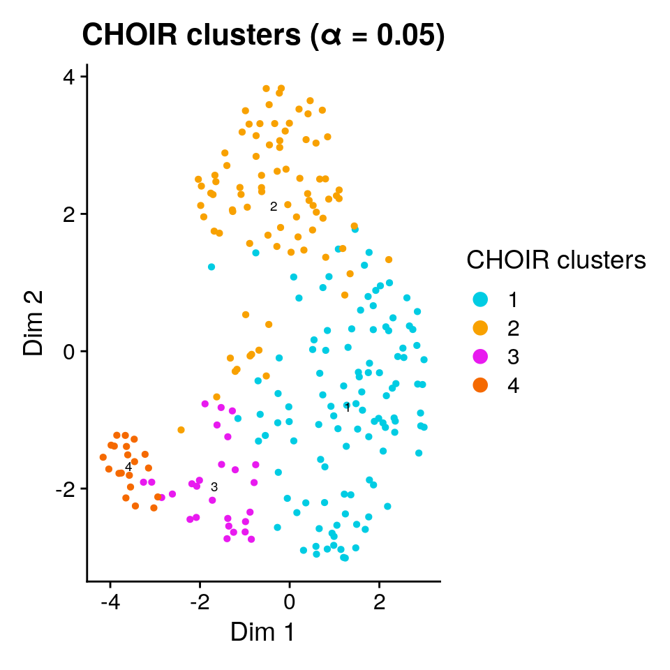
The final set of clusters was chosen based on the ability of a (collection of) random forest classifier(s) to accurately assign cells to them. We can add the observed mean (out-of-bag) prediction error for each pair to the plot:
plotCHOIR(object,
reduction = "P0_reduction_UMAP",
accuracy_scores = TRUE,
plot_nearest = FALSE)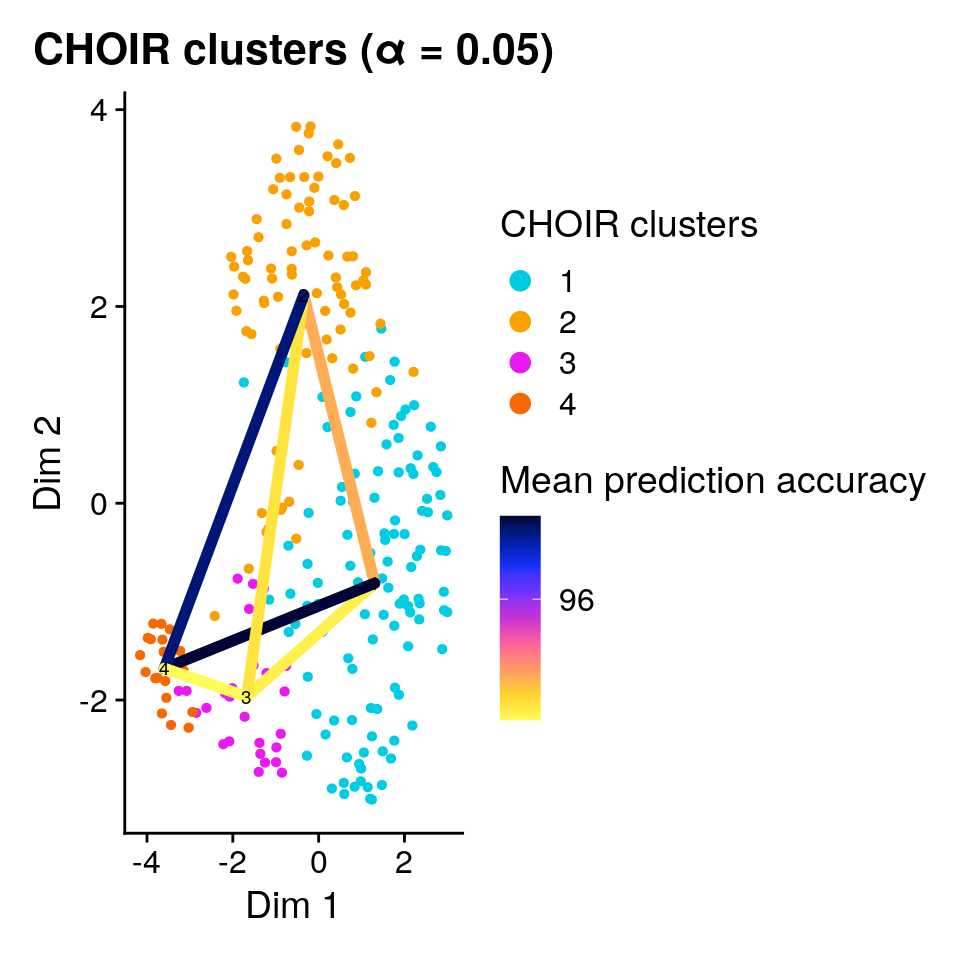
A larger dataset: mouse brain cell types (Zeisel et al, 2015)
The dataset we analyzed above was very small, containing only 243 neurons with very similar gene expression profiles. As a second example, let’s analyze a (classic) dataset of ~ 3000 mouse brain cell types published by Zeisel et al next. The raw data is also available via the scRNAseq Bioconductor package:
sce <- fetchDataset("zeisel-brain-2015", "2023-12-14")This SingleCellExperiment object contains raw counts for 3005 cells, assigned to one of 7 coarse cell types (level1class):
table(sce$level1class)
astrocytes_ependymal endothelial-mural interneurons
224 235 290
microglia oligodendrocytes pyramidal CA1
98 820 939
pyramidal SS
399 and one of 48 more granular cell types (level2class):
table(sce$level2class)
(none) Astro1 Astro2 CA1Pyr1 CA1Pyr2 CA1PyrInt CA2Pyr2 Choroid
189 68 61 380 447 49 41 10
ClauPyr Epend Int1 Int10 Int11 Int12 Int13 Int14
5 20 12 21 10 21 15 22
Int15 Int16 Int2 Int3 Int4 Int5 Int6 Int7
18 20 24 10 15 20 22 23
Int8 Int9 Mgl1 Mgl2 Oligo1 Oligo2 Oligo3 Oligo4
26 11 17 16 45 98 87 106
Oligo5 Oligo6 Peric Pvm1 Pvm2 S1PyrDL S1PyrL23 S1PyrL4
125 359 21 32 33 81 74 26
S1PyrL5 S1PyrL5a S1PyrL6 S1PyrL6b SubPyr Vend1 Vend2 Vsmc
16 28 39 21 22 32 105 62 Quality control & normalization
We follow the steps outlined in the Single-Cell Analysis Workflows with Bioconductor book to preprocess and normalize the counts. This also gives us the opportunity to employ packages from the Bioconductor universe as an alternative to Seurat for single-cell analysis.
suppressPackageStartupMessages({
1 library(BiocParallel)
2 library(scater)
3 library(scran)
})
multicore_param <- BiocParallel::MulticoreParam(workers = n_cores)- 1
- The BiocParallel Bioconductor package facilitates parallel execution across multiple cores or computers.
- 2
- The scater Bioconductor package contains functionality focussed on quality control and visualization of single-cell data.
- 3
- The scran Bioconductor package Bioconductor package offers methods to assign cell cycle phase, detection of highly variable and significantly correlated genes, identification of marker genes, and other common tasks (such as normalization as used here).
The expression for some genes was recorded in more than one feature, e.g. there are two rows for the Hist1h4n gene:
grep("Hist1h4n", row.names(sce), value = TRUE)[1] "Hist1h4n_loc1" "Hist1h4n_loc2"We combine the counts for features assigned to the same gene symbol:
sce <- aggregateAcrossFeatures(sce, id=sub("_loc[0-9]+$", "", rownames(sce)))Now we are ready for quality control & normalization.
4stats <- perCellQCMetrics(sce, subsets = list(
Mt = rowData(sce)$featureType == "mito"))
qc <- quickPerCellQC(stats, percent_subsets=c("altexps_ERCC_percent",
"subsets_Mt_percent"))
sce <- sce[,!qc$discard]
set.seed(1000)
clusters <- quickCluster(sce, BPPARAM = multicore_param)
5sce <- computeSumFactors(sce, cluster = clusters,
BPPARAM = multicore_param)
sce <- logNormCounts(sce)- 4
- We remove low quality cells that remained in the datas despite the authors’ original filtering procedure.
- 5
- We obtain normalized counts using deconvolution size factors
Clustering using CHOIR
Let’s stick to CHOIR’s default parameters and parallelize over 4 once again.
tic(msg = "Starting CHOIR run")
sce <- CHOIR(sce, n_cores = n_cores)
toc()Starting CHOIR run: 1190.188 sec elapsedThe colData slot of the SingleCellExperiment object now contains the CHOIR_clusters_0.05 column, indication which of the 28 CHOIR clusters a cell was assigned to.
Let’s visualize the results in a UMAP and color each cell either by its published cell type label (level1class or level2class) or its CHOIR cluster.
CHOIR assigned many more clusters than are captured as level1class by Zeisel et al:
sce <- runCHOIRumap(sce, reduction = "P0_reduction")
plotCHOIR(sce,
group_by = "level1class",
reduction = "P0_reduction_UMAP",
accuracy_scores = FALSE,
plot_nearest = FALSE) +
plotCHOIR(sce,
group_by = "CHOIR_clusters_0.05",
reduction = "P0_reduction_UMAP",
accuracy_scores = FALSE,
plot_nearest = FALSE)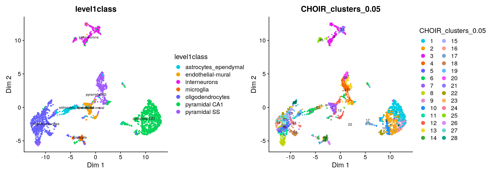
Because of the large number of granular cell types / CHOIR clusters, it is difficult to assess the degree of concordance visually:
plotCHOIR(sce,
group_by = "level2class",
reduction = "P0_reduction_UMAP",
accuracy_scores = FALSE,
plot_nearest = FALSE) +
plotCHOIR(sce,
group_by = "CHOIR_clusters_0.05",
reduction = "P0_reduction_UMAP",
accuracy_scores = FALSE,
plot_nearest = FALSE)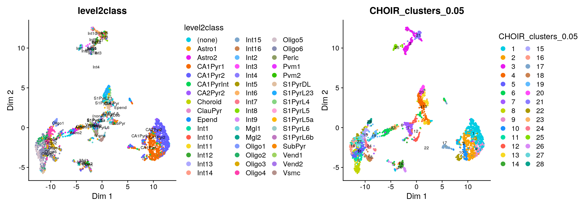
Instead, let’s calculate the proportion of overlap between the original coarse annotations and the CHOIR clusters and visualize them in a heatmap.
First, we plot the number of cells assigned to the each cluster / cell type[^8],
[^8] I found the plotClustersTable function from the clusterExperiment very helpful here, as it automatically reorders the rows and columns of the heatmap.
suppressPackageStartupMessages({
library(clusterExperiment)
})
cluster_table <- with(colData(sce), table(level1class, CHOIR_clusters_0.05))
plotClustersTable(cluster_table, legend = FALSE, cexRow = 0.5)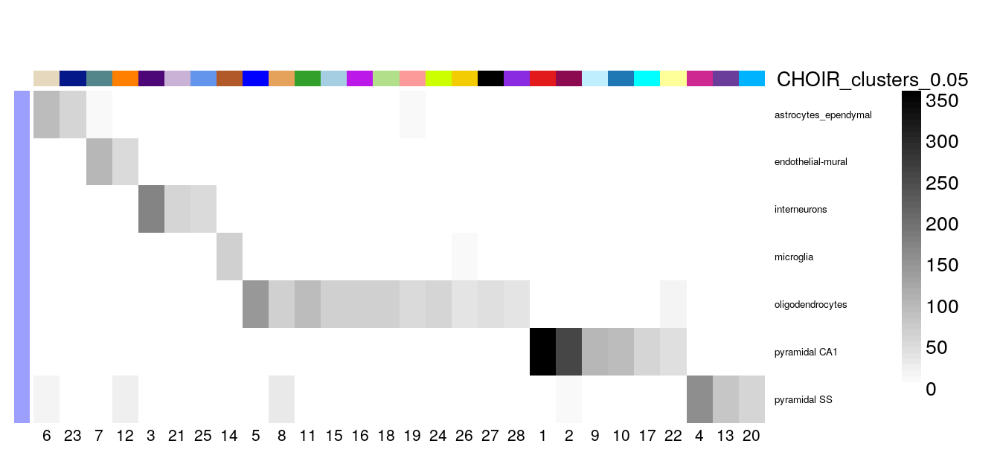
Alternatively, we can also calculate the proportion of overlap8 between the cluster assignments first, e.g. the fraction of the cells from each cell type assigned by Zeisel et al (level1class) in each of the CHOIR clusters.
prop_table <- with(colData(sce), prop.table(cluster_table, margin = 1))
plotClustersTable(prop_table, cexRow = 0.5, legend = FALSE)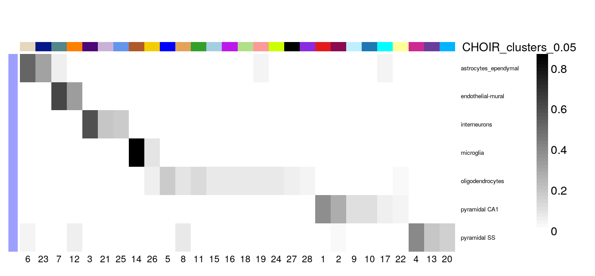
It seems that nearly all of the CHOIR clusters have captured a subset of a single cell type defined by Zeisel et al, e.g. the clusters are nested subsets of the original labels and might reflect further sub-division into more granular types.
Zeisel et al also provided more granular annotations as 48 level2class groups. Let’s look at their concordance with the CHOIR clusters in the same way 9.
cluster_table <- with(colData(sce), table(level2class, CHOIR_clusters_0.05))
prop_table <- with(colData(sce), prop.table(cluster_table, margin = 1))
plotClustersTable(prop_table, legend = FALSE, cexRow = 0.5)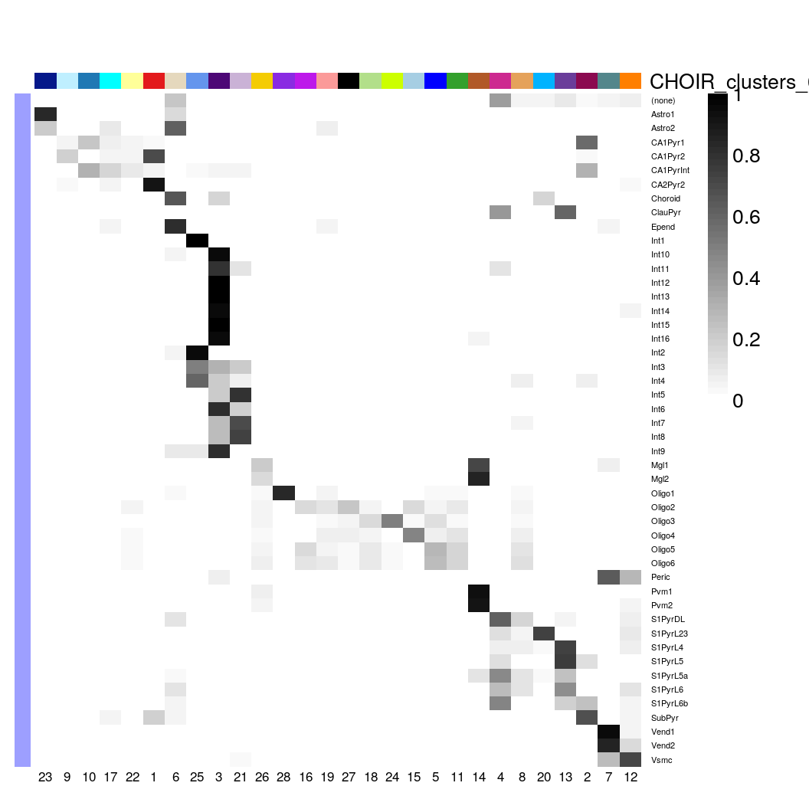
Let’s take a closer look at the rsum(sce$level1class == “microglia”)cells Zeisel et al annotated asmicroglia, and then sub-grouped into 4 level two groups (Mgl1, Mgl2, Pvm1 and Pvm2).CHOIR` lumped almost all of them into a single sub-cluster:
with(colData(sce)[sce$level1class == "microglia", ],
table(level2class, CHOIR_clusters_0.05)
) |>
plotClustersTable()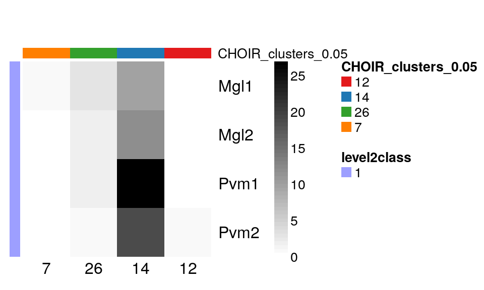
Similarly, Zeisel et al distinguished 16 different subtypes of interneurons, which overlap ~ 4 CHOIR clusters:
with(colData(sce)[sce$level1class == "interneurons", ],
table(level2class, CHOIR_clusters_0.05)
) |>
plotClustersTable()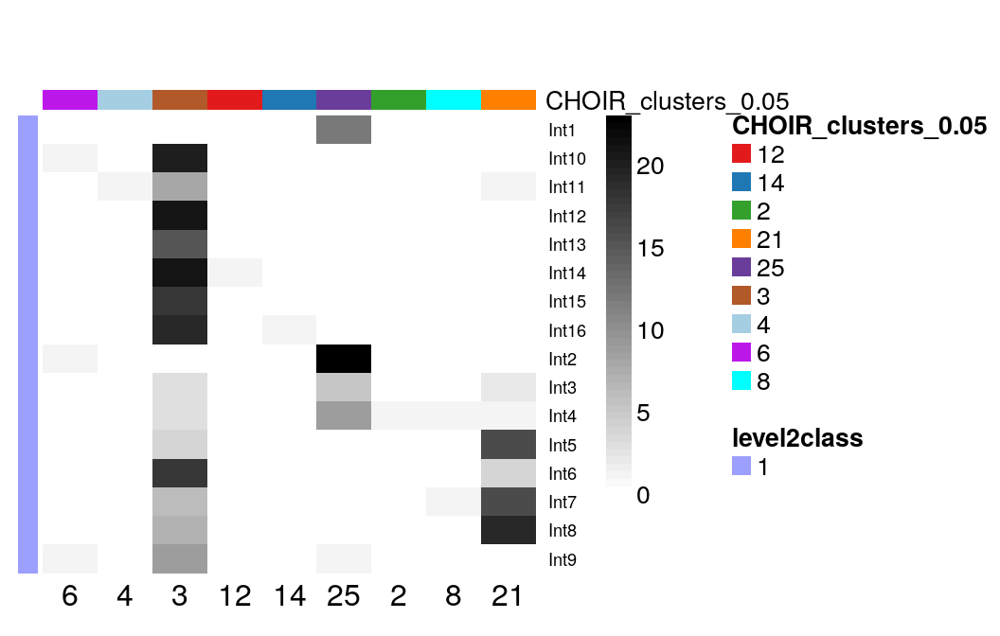
Finally, Zeisel et al classified oligodendrocytes into 6 different subtypes of interneurons. CHOIR clustered them into even more sub-groups:
with(colData(sce)[sce$level1class == "oligodendrocytes", ],
table(level2class, CHOIR_clusters_0.05)
) |>
plotClustersTable()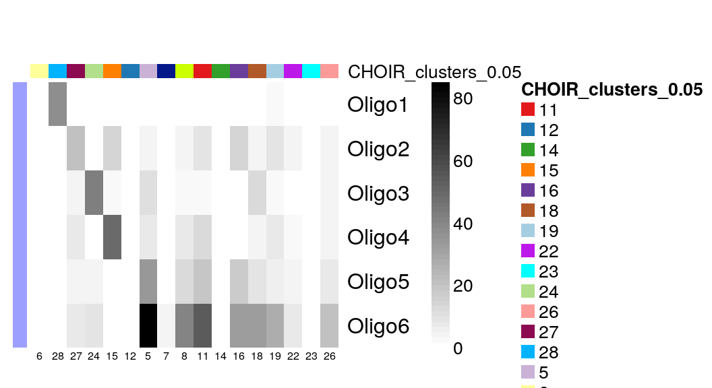
Identifying cell states: mouse microglia (Nugent et al, 2018)
Zeisel et al sampled cells of many different types, e.g. neurons and glia. Another application of single-cell (or single-nuclei) analysis is the identification of different transcriptional (and presumably functiona) states within a single cell type.
In 2019, Nugent et al fed mice with one of three different versions (genotypes) of the Trem2 surface receptor gene, e.g. either
- wildtype Trem2,
- heterozyogus knockout of the Trem2, or
- homozygous knockout of Trem2
either a control or 0.2% cuprizone diet for 5 weeks or 12 weeks. (Cuprizone causes demyelination of neurons, and the two time points were chosen to model either its acute or chronic effects.)
The authors10 isolated microglia using fluorescent activated cell sorting (FACS) based on high Cd11b and low Cd45 expression, and performed single-cell RNA-seq using the 10X Genomics system.
Let’s download the raw count matrix from the NCBI GEO repository, combine it with the sample annotations and create a SingleCellExperiment.
suppressPackageStartupMessages({
library(Matrix)
library(SingleCellExperiment)
})
options(timeout = 360)
sce <- local({
temp_dir <- file.path(tempdir(), "GSE130626")
dir.create(temp_dir, showWarnings = FALSE, recursive = TRUE)
url_root <- paste0("https://www.ncbi.nlm.nih.gov/geo/download/?",
"acc=GSE130626&format=file&file=GSE130626_")
m <- local({
raw_counts <- file.path(temp_dir, "umi_counts.csv.gz")
download.file(
paste0(url_root, "umi_counts.csv.gz"),
destfile = raw_counts)
read.csv(raw_counts, row.names = 1) |>
as("sparseMatrix")
})
cell_anno <- local({
cell_metadata <- file.path(temp_dir, "cell_info.csv.gz")
download.file(
paste0(url_root, "cell_info.csv.gz"),
destfile = cell_metadata)
read.csv(cell_metadata, row.names = 1)
})
gene_anno <- local({
gene_metadata <- file.path(temp_dir, "gene_info.csv.gz")
download.file(
paste0(url_root, "gene_info.csv.gz"),
destfile = gene_metadata)
read.csv(gene_metadata, row.names = 1)
})
stopifnot(nrow(cell_anno) == ncol(m))
stopifnot(nrow(gene_anno) == nrow(m))
SingleCellExperiment(
assays=list(counts=m),
rowData = gene_anno,
colData = cell_anno
)
})The dataset contains measurements for 3023 cells, from the following groups:
with(colData(sce), table(treatment, trem2_genotype)) trem2_genotype
treatment Het KO WT
cuprizone 802 885 765
none 0 0 571During the original analysis, we clustered the microglia into 8 clusters. Let’s see how many clusters CHOIR detects!
Quality control and normalization
We follow the same normalization strategy we applied to the Zeisel et al data.
stats <- perCellQCMetrics(sce, subsets = list(
Mt = rowData(sce)$is_mito))
qc <- quickPerCellQC(stats, percent_subsets=c("subsets_Mt_percent"))
sce <- sce[,!qc$discard]
set.seed(1000)
clusters <- quickCluster(sce, BPPARAM = multicore_param)
sce <- computeSumFactors(sce, cluster = clusters, BPPARAM = multicore_param)
sce <- logNormCounts(sce)Exploratory analysis
To take a quick peek at the data, we identify variable genes across the dataset, perform PCA followed by tSNE and UMAP embedding, and then visualize the results.
dec <- modelGeneVarByPoisson(sce)
top <- getTopHVGs(dec, prop=0.1)
sce <- denoisePCA(sce, subset.row=top, technical=dec)
set.seed(123L)
sce <- runTSNE(sce, dimred="PCA")
plotTSNE(sce, color_by = "snn_cluster")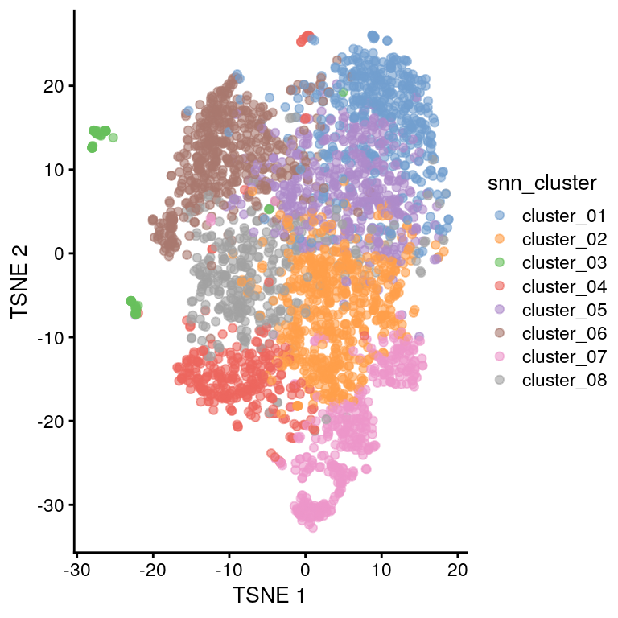
The tSNE plot looks similar to Figure 2A from the 2019 publication, that’s encouraging.
{kind=link}
Cells from the four treatment groups (defined by the treatment and trem2_genotype annotations) appear to be well mixed, too, e.g. we don’t see evidence for (strong) batch effects.
plotTSNE(sce, color_by = "trem2_genotype") +
plotTSNE(sce, color_by = "treatment")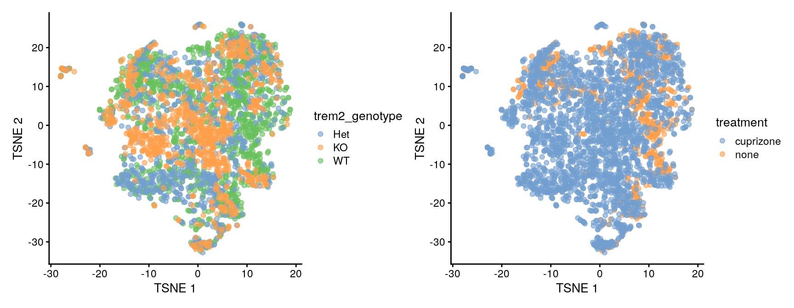
Defining clusters with CHOIR
Next, we run CHOIR again using default parameters.
tic(msg = "Starting CHOIR run")
sce <- CHOIR(sce, n_cores = n_cores)
toc()Starting CHOIR run: 658.253 sec elapsedfollowed by UMAP embedding using PCs from the first dimensionality reduction step:
sce <- runCHOIRumap(sce, reduction = "P0_reduction")
plotCHOIR(sce,
group_by = "snn_cluster",
reduction = "P0_reduction_UMAP",
accuracy_scores = FALSE,
plot_nearest = FALSE) +
plotCHOIR(sce,
group_by = "CHOIR_clusters_0.05",
reduction = "P0_reduction_UMAP",
accuracy_scores = FALSE,
plot_nearest = FALSE)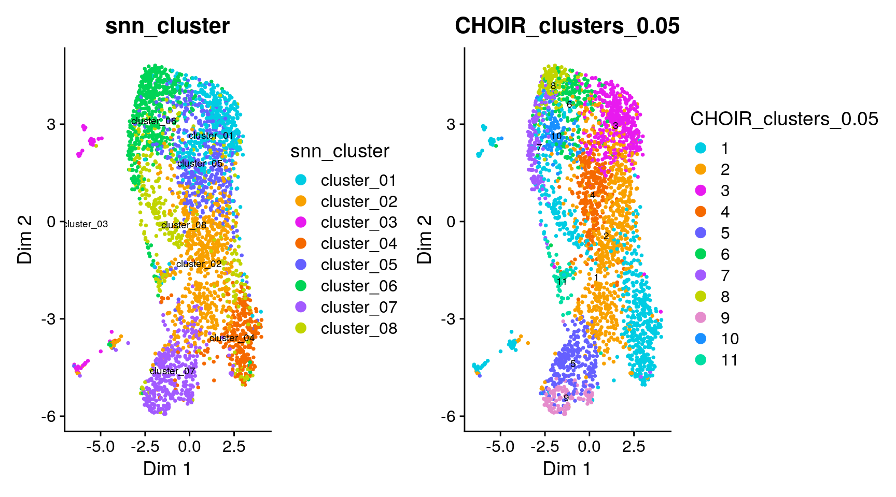
As for the Zeisel et al dataset, it is hard to judge concordance between the two UMAPs visually. Instead, we plot the overlap between the original clusters (snn_cluster) and those defined by CHOIR.
with(colData(sce),
prop.table(table(snn_cluster, CHOIR_clusters_0.05), margin = 1)
) |>
plotClustersTable()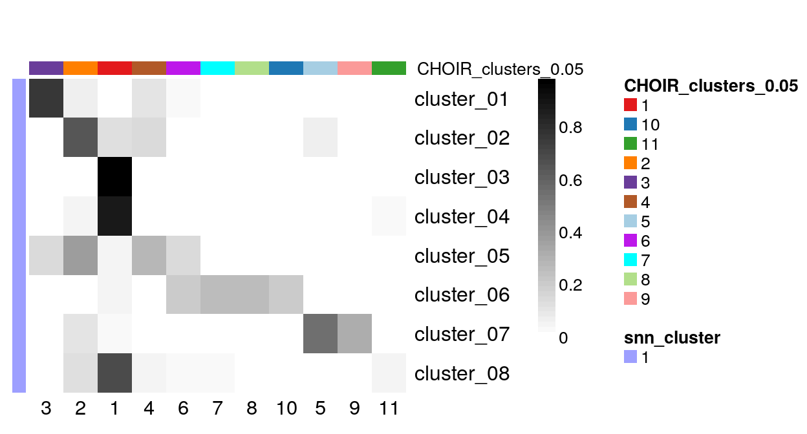
There are few CHOIR clusters (columns) that contain only cells from a single cluster defined by Nugent et al. Most other CHOIR clusters constitute a mixture of cells from multiple of the original groups.
Despite the relatively similar overall number of clusters ( 8 original clusters and 11 CHOIR clusters) the results look quite different. This is not a surprise, as the choice of clustering methods and parameters has a strong impact on the final outcome.
To identify stable clustering solutions, it might be necessary to explore a collection of results, e.g. via the clusterExperiment Bioconductor R package instead of relying on any single approach.
Additional features
Running CHOIR with Harmony batch correction / integration
If a dataset contains cells collected in multiple batches (e.g. on different days or even using different technologies), we can use the Harmony to integrate them into a shared embedding space.
Let’s return to the (very small) neuron dataset by La Manno et al to demonstrate this functionality.
This dataset does not contain batch information - so let’sjust just assign cells to two random batches (A and B) to see how CHOIR handles them.
1object <- CreateSeuratObject(data_matrix,
min.features = 100,
min.cells = 5)
object <- NormalizeData(object)
set.seed(123)
2object$batch <- sample(c("A", "B"), size = ncol(object), replace = TRUE)
object <- CHOIR(object,
batch_correction_method = "Harmony",
batch_labels = "batch")- 1
- Let’s start with a fresh Seurat object.
- 2
- Because the example dataset does not include cells from multiple batches, we just create a random indicator variable (for demonstration purposes only).
Count splitting
CHOIR is using the entire count matrix to cluster & assess sub-cluster membership. Although an individual random forest is relatively robust towards overfitting, the entire CHOIR workflow might suffer from the problem of “double dipping”, e.g. creating spurious / overly optimistic results because clustering & inference are based on the same data.
Neufeld et al have proposed count splitting as a novel approach to safeguard against overfitting in this context, and CHOIR has the option of implementing it within its workflow 11 and can be requested via the countsplit argument.
To demonstrate, we again return to the small dataset we used above and start with a fresh SeuratObject:
object <- CreateSeuratObject(data_matrix,
min.features = 100,
min.cells = 5)
object <- NormalizeData(object)
object <- runCountSplit(object)
object@assays$RNA
Assay (v5) data with 12464 features for 243 cells
First 10 features:
Feature3, Feature4, Feature5, Feature6, Feature7, Feature8, Feature9,
Feature10, Feature11, Feature12
Layers:
counts, data, counts_1, counts_2, counts_log_1, counts_log_2 object <- CHOIR(object,
use_slot = "counts_log",
countsplit = TRUE,
n_cores = n_cores)Very large datasets
If your dataset is too large to process in one step (e.g. more than 500,000 cells), check out the separate vignette on using CHOIR for atlas-scale data.
Reproducibility
Session Information
sessionInfo()R version 4.4.1 (2024-06-14)
Platform: x86_64-pc-linux-gnu
Running under: Ubuntu 22.04.5 LTS
Matrix products: default
BLAS: /usr/lib/x86_64-linux-gnu/openblas-pthread/libblas.so.3
LAPACK: /usr/lib/x86_64-linux-gnu/openblas-pthread/libopenblasp-r0.3.20.so; LAPACK version 3.10.0
Random number generation:
RNG: L'Ecuyer-CMRG
Normal: Inversion
Sample: Rejection
locale:
[1] LC_CTYPE=en_US.UTF-8 LC_NUMERIC=C
[3] LC_TIME=en_US.UTF-8 LC_COLLATE=en_US.UTF-8
[5] LC_MONETARY=en_US.UTF-8 LC_MESSAGES=en_US.UTF-8
[7] LC_PAPER=en_US.UTF-8 LC_NAME=C
[9] LC_ADDRESS=C LC_TELEPHONE=C
[11] LC_MEASUREMENT=en_US.UTF-8 LC_IDENTIFICATION=C
time zone: Etc/UTC
tzcode source: system (glibc)
attached base packages:
[1] stats4 stats graphics grDevices datasets utils methods
[8] base
other attached packages:
[1] Matrix_1.7-0 clusterExperiment_2.26.0
[3] scran_1.34.0 scater_1.34.1
[5] ggplot2_3.5.2 scuttle_1.16.0
[7] BiocParallel_1.40.2 future_1.40.0
[9] tictoc_1.2.1 Seurat_5.3.0
[11] SeuratObject_5.1.0 sp_2.2-0
[13] scRNAseq_2.20.0 SingleCellExperiment_1.28.1
[15] SummarizedExperiment_1.36.0 Biobase_2.66.0
[17] GenomicRanges_1.58.0 GenomeInfoDb_1.42.3
[19] IRanges_2.40.1 S4Vectors_0.44.0
[21] BiocGenerics_0.52.0 MatrixGenerics_1.18.1
[23] matrixStats_1.5.0 ragg_1.4.0
[25] ggnewscale_0.5.1 countsplit_4.0.0
[27] CHOIR_0.3.0
loaded via a namespace (and not attached):
[1] progress_1.2.3 locfdr_1.1-8 goftest_1.2-3
[4] phytools_2.4-4 Biostrings_2.74.1 HDF5Array_1.34.0
[7] vctrs_0.6.5 spatstat.random_3.3-3 digest_0.6.37
[10] png_0.1-8 registry_0.5-1 gypsum_1.2.0
[13] ggrepel_0.9.6 deldir_2.0-4 parallelly_1.43.0
[16] combinat_0.0-8 alabaster.sce_1.6.0 renv_1.1.4
[19] magick_2.8.6 MASS_7.3-60.2 reshape2_1.4.4
[22] httpuv_1.6.16 foreach_1.5.2 withr_3.0.2
[25] xfun_0.49 ggfun_0.1.8 survival_3.6-4
[28] memoise_2.0.1 ggbeeswarm_0.7.2 clustree_0.5.1
[31] systemfonts_1.2.3 phylobase_0.8.12 tidytree_0.4.6
[34] zoo_1.8-14 DEoptim_2.2-8 pbapply_1.7-2
[37] prettyunits_1.2.0 KEGGREST_1.46.0 promises_1.3.2
[40] scatterplot3d_0.3-44 httr_1.4.7 rncl_0.8.7
[43] restfulr_0.0.15 globals_0.17.0 fitdistrplus_1.2-2
[46] rhdf5filters_1.18.1 zinbwave_1.28.0 rhdf5_2.50.2
[49] UCSC.utils_1.2.0 miniUI_0.1.2 generics_0.1.3
[52] curl_6.2.2 zlibbioc_1.52.0 ScaledMatrix_1.14.0
[55] ggraph_2.2.1 mrtree_0.0.0.9000 polyclip_1.10-7
[58] GenomeInfoDbData_1.2.13 quadprog_1.5-8 ExperimentHub_2.14.0
[61] SparseArray_1.6.2 ade4_1.7-23 xtable_1.8-4
[64] stringr_1.5.1 doParallel_1.0.17 evaluate_1.0.1
[67] S4Arrays_1.6.0 BiocFileCache_2.14.0 hms_1.1.3
[70] irlba_2.3.5.1 colorspace_2.1-1 filelock_1.0.3
[73] harmony_1.2.3 ROCR_1.0-11 reticulate_1.42.0
[76] spatstat.data_3.1-6 magrittr_2.0.3 lmtest_0.9-40
[79] later_1.4.2 viridis_0.6.5 ggtree_3.14.0
[82] lattice_0.22-6 genefilter_1.88.0 NMF_0.28
[85] spatstat.geom_3.3-6 future.apply_1.11.3 scattermore_1.2
[88] XML_3.99-0.18 cowplot_1.1.3 RcppAnnoy_0.0.22
[91] pillar_1.10.2 nlme_3.1-164 iterators_1.0.14
[94] gridBase_0.4-7 compiler_4.4.1 beachmat_2.22.0
[97] RSpectra_0.16-2 stringi_1.8.7 tensor_1.5
[100] dendextend_1.19.0 GenomicAlignments_1.42.0 plyr_1.8.9
[103] crayon_1.5.3 abind_1.4-8 BiocIO_1.16.0
[106] gridGraphics_0.5-1 locfit_1.5-9.12 graphlayouts_1.2.2
[109] bit_4.6.0 dplyr_1.1.4 fastmatch_1.1-6
[112] codetools_0.2-20 textshaping_1.0.1 BiocSingular_1.22.0
[115] alabaster.ranges_1.6.0 plotly_4.10.4 mime_0.12
[118] splines_4.4.1 Rcpp_1.0.14 fastDummies_1.7.5
[121] dbplyr_2.5.0 knitr_1.49 blob_1.2.4
[124] BiocVersion_3.20.0 AnnotationFilter_1.30.0 fs_1.6.5
[127] listenv_0.9.1 checkmate_2.3.2 expm_1.0-0
[130] ggplotify_0.1.2 tibble_3.2.1 statmod_1.5.0
[133] tweenr_2.0.3 pkgconfig_2.0.3 tools_4.4.1
[136] cachem_1.1.0 RhpcBLASctl_0.23-42 RSQLite_2.3.10
[139] viridisLite_0.4.2 DBI_1.2.3 numDeriv_2016.8-1.1
[142] fastmap_1.2.0 rmarkdown_2.29 scales_1.4.0
[145] grid_4.4.1 ica_1.0-3 Rsamtools_2.22.0
[148] AnnotationHub_3.14.0 patchwork_1.3.0 coda_0.19-4.1
[151] BiocManager_1.30.25 dotCall64_1.2 RANN_2.6.2
[154] alabaster.schemas_1.6.0 ggimage_0.3.3 farver_2.1.2
[157] tidygraph_1.3.1 yaml_2.3.10 rtracklayer_1.66.0
[160] cli_3.6.3 purrr_1.0.4 lifecycle_1.0.4
[163] RNeXML_2.4.11 uwot_0.2.3 kernlab_0.9-33
[166] bluster_1.16.0 backports_1.5.0 annotate_1.84.0
[169] gtable_0.3.6 rjson_0.2.23 ggridges_0.5.6
[172] progressr_0.15.1 limma_3.62.2 parallel_4.4.1
[175] ape_5.8-1 softImpute_1.4-2 edgeR_4.4.2
[178] jsonlite_1.8.9 RcppHNSW_0.6.0 bitops_1.0-9
[181] bit64_4.6.0-1 Rtsne_0.17 yulab.utils_0.2.0
[184] alabaster.matrix_1.6.1 spatstat.utils_3.1-3 BiocNeighbors_2.0.1
[187] metapod_1.14.0 alabaster.se_1.6.0 dqrng_0.4.1
[190] spatstat.univar_3.1-2 lazyeval_0.2.2 alabaster.base_1.6.1
[193] shiny_1.10.0 htmltools_0.5.8.1 sctransform_0.4.2
[196] rappdirs_0.3.3 data.tree_1.1.0 ensembldb_2.30.0
[199] glue_1.8.0 spam_2.11-1 SymSim_0.0.0.9000
[202] httr2_1.1.2 XVector_0.46.0 RCurl_1.98-1.17
[205] treeio_1.30.0 mnormt_2.1.1 gridExtra_2.3
[208] igraph_2.1.4 R6_2.5.1 tidyr_1.3.1
[211] labeling_0.4.3 GenomicFeatures_1.58.0 rngtools_1.5.2
[214] cluster_2.1.6 Rhdf5lib_1.28.0 aplot_0.2.5
[217] vipor_0.4.7 DelayedArray_0.32.0 tidyselect_1.2.1
[220] ProtGenerics_1.38.0 maps_3.4.2.1 xml2_1.3.8
[223] ggforce_0.4.2 AnnotationDbi_1.68.0 rsvd_1.0.5
[226] KernSmooth_2.23-24 optimParallel_1.0-2 data.table_1.17.0
[229] htmlwidgets_1.6.4 RColorBrewer_1.1-3 rlang_1.1.4
[232] clusterGeneration_1.3.8 spatstat.sparse_3.1-0 spatstat.explore_3.4-2
[235] uuid_1.2-1 phangorn_2.12.1 beeswarm_0.4.0 
This work is licensed under a Creative Commons Attribution 4.0 International License.
Footnotes
In their excellent book Modern Statistics for Modern Biology:↩︎
Afterwards, analysts often compare gene expression between the newly discovered clusters - and sometimes use the presence of differentially expressed genes as support for the biological validity of the identified subgroups. This approach is flawed, because clustering and differential expression on the same data always creates apparent differences between the subgroups. See e.g. Zhang et al, Neufeld et al or Song et al for post-hoc methods to perform post-doc analyses in a rigorous way without double-dipping.↩︎
Including Seurat’s default workflow↩︎
Random forest classifiers are less prone to overfitting than other statistical learning approaches and don’t make distributional assumptions. They can also highlight which features (e.g. genes) are most informative and might therefore correspond to useful marker genes of a cluster.↩︎
Clusters defined based solely on the scRNA-seq data are more likely to be biologically meaningful (aka true) if they also reveal differentially abundant features in the other modality.↩︎
The
CHOIRR package is tightly integrated with the R / Bioconductor ecosystem and comes with a very large number of dependencies. On my system, it required installing and downloading ~ 200 additional R packages in a freshrenvenvironment - not even counting the optionalcountsplit,ggnewscaleorscRNAseqR packages and their dependencies.↩︎The type of proportion (e.g. group 1 / group 2 or vice versa) is defined by the
marginargument in theprop.tablefunction.↩︎Because Zeisel et al defined more sub-clusters than identified by
CHOIR, we don’t expect perfect concordance - but hopefullyCHOIRcaptured cells from the (more granual)level2classannotations inside the same clusters.↩︎I am a co-author of this paper.↩︎
The original count splitting approach was based on the assumption that after accounting for heterogenous expected expression across cells and genes, the scRNA-seq data follow a Poisson distribution. If this assumption was violated the approach might not perform as expected. More recently, the method has been extended to data that follows a negative binomial distribution; this is still an area of active research.↩︎